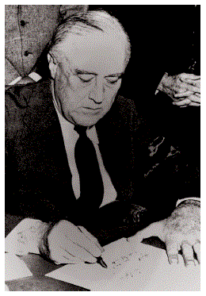
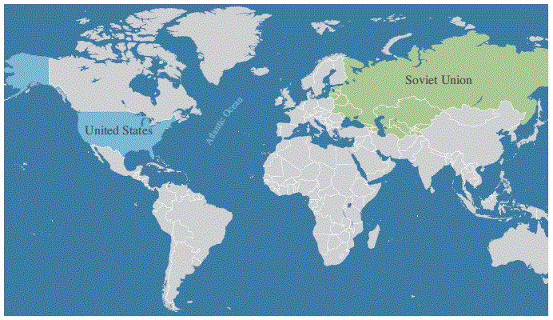
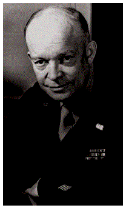
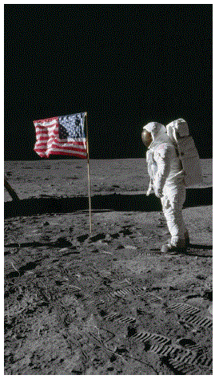
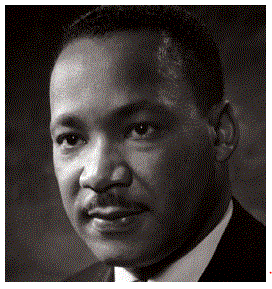
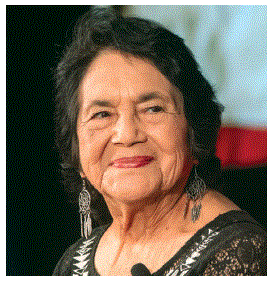

[p62]
In this chapter, you will learn about:
By the 1900s, more people in the United States were moving to cities to work in factories, and immigrants from all over the world were moving to the U.S. The United States' economy was starting to grow, and soon the U.S. would begin to increase the size of its military.
[Photo: Rubber-making factories on a river in 1897. Courtesy of the Library of Congress.]
[p62]
En este capítulo, aprenderá sobre:
Para los años 1900, más personas en los Estados Unidos se mudaban a las ciudades para trabajar en fábricas, e inmigrantes de todo el mundo se mudaban a los Estados Unidos. La economía de los Estados Unidos estaba comenzando a crecer, y pronto los Estados Unidos comenzaría a aumentar el tamaño de su ejército.
[Foto: Fábricas de fabricación de caucho en un río en 1897. Cortesía de la Biblioteca del Congreso.]
[p63]
In 1914, a war started in Europe. When the war started, it was called The Great War. Today, the Great War is called World War I. There were many countries fighting on each side of the war during World War I.
World War I is one war fought by the United States in the 1900s. World War I was fought by countries from around the world from 1914 – 1918, but the U.S. did not join the war until 1917. The U.S. fought in World War I from 1917 – 1918.
World War I ended on November 11, 1918. Today, we celebrate Veterans' Day every November 11 in honor of the men and women (alive and deceased) who have served in the military. Veterans' Day is a national U.S. Holiday.
Woodrow Wilson was President during World War I. Woodrow Wilson was the 28th President of the United States, and he was President from 1913 – 1921.
[Photo: American soldiers in a trench in France during World War I. Courtesy of the Library of Congress.]
[Photo: Two sailors read a newspaper with the headline "Great War Ends." Courtesy of the Library of Congress.]
Other wars that the United States fought in the 1900s include:
[p63]
En 1914, comenzó una guerra en Europa. Cuando comenzó la guerra, se llamó La Gran Guerra. Hoy, la Gran Guerra se llama la Primera Guerra Mundial. Había muchos países luchando en cada lado de la guerra durante la Primera Guerra Mundial.
La Primera Guerra Mundial es una guerra librada por los Estados Unidos en el siglo XX. La Primera Guerra Mundial fue librada por países de todo el mundo de 1914 a 1918, pero los Estados Unidos no se unieron a la guerra hasta 1917. Los Estados Unidos lucharon en la Primera Guerra Mundial de 1917 a 1918.
La Primera Guerra Mundial terminó el 11 de noviembre de 1918. Hoy, celebramos el Día de los Veteranos cada 11 de noviembre en honor a los hombres y mujeres (vivos y fallecidos) que han servido en el ejército. El Día de los Veteranos es un feriado nacional de los Estados Unidos.
Woodrow Wilson fue Presidente durante la Primera Guerra Mundial. Woodrow Wilson fue el 28.° Presidente de los Estados Unidos, y fue Presidente de 1913 a 1921.
[Foto: Soldados americanos en una trinchera en Francia durante la Primera Guerra Mundial. Cortesía de la Biblioteca del Congreso.]
[Foto: Dos marineros leen un periódico con el titular "La Gran Guerra termina." Cortesía de la Biblioteca del Congreso.]
Otras guerras que los Estados Unidos libraron en el siglo XX incluyen:
When President Roosevelt was elected in 1933, the U.S. was in the Great Depression. The Great Depression was the worst time for the U.S. economy in American history.
The economic system in the United States is called a "capitalist economy". It is also sometimes called a "market economy". In a market economy, the government does not control the economy. Also, people are free to start a business and make money.
The Great Depression had terrible effects on the American economy. During the Great Depression, banks and businesses around the country closed, and many people could not a get a job. A lot of people in the U.S. lost their homes and their money.
[Photo: Statue of a Depression breadline at the Franklin Delano Roosevelt Memorial, Washington, D.C. Courtesy of the Library of Congress.]
[Photo: A migrant agricultural worker's family during the Great Depression. Photograph by Dorothea Lange. Courtesy of the Library of Congress.]
Cuando el Presidente Roosevelt fue elegido en 1933, los Estados Unidos estaban en la Gran Depresión. La Gran Depresión fue el peor momento para la economía de los Estados Unidos en la historia americana.
El sistema económico en los Estados Unidos se llama "economía capitalista". A veces también se llama "economía de mercado". En una economía de mercado, el gobierno no controla la economía. Además, las personas son libres de iniciar un negocio y ganar dinero.
La Gran Depresión tuvo efectos terribles en la economía americana. Durante la Gran Depresión, los bancos y negocios de todo el país cerraron, y muchas personas no podían conseguir trabajo. Muchas personas en los Estados Unidos perdieron sus hogares y su dinero.
[Foto: Estatua de una fila de personas esperando comida durante la Depresión en el Memorial Franklin Delano Roosevelt, Washington, D.C. Cortesía de la Biblioteca del Congreso.]
[Foto: La familia de una trabajadora agrícola migrante durante la Gran Depresión. Fotografía de Dorothea Lange. Cortesía de la Biblioteca del Congreso.]
[p64]
In 1933, Franklin Roosevelt was elected the 32nd President of the United States. Franklin Roosevelt was the longest-serving President in U.S. history, and he was elected President four times. He was President from 1933 – 1945, and he died while serving as President in 1945. In 1951, the 22nd amendment was added to the Constitution. An amendment is a change to the Constitution. The 22nd Amendment says a person can only be elected President two times.
Franklin Roosevelt was President during two important periods in American history. He was President during the Great Depression and World War II.
[Photo: President Franklin D. Roosevelt signing the Declaration of War against Japan on December 8, 1941. Courtesy of the National Archives.]
[p64]
En 1933, Franklin Roosevelt fue elegido el 32.° Presidente de los Estados Unidos. Franklin Roosevelt fue el Presidente que más tiempo sirvió en la historia de los Estados Unidos, y fue elegido Presidente cuatro veces. Fue Presidente de 1933 a 1945, y murió mientras servía como Presidente en 1945. En 1951, la 22.ª enmienda fue añadida a la Constitución. Una enmienda es un cambio a la Constitución. La 22.ª Enmienda dice que una persona solo puede ser elegida Presidente dos veces.
Franklin Roosevelt fue Presidente durante dos períodos importantes en la historia americana. Él fue Presidente durante la Gran Depresión y la Segunda Guerra Mundial.
[Foto: El Presidente Franklin D. Roosevelt firmando la Declaración de Guerra contra Japón el 8 de diciembre de 1941. Cortesía de los Archivos Nacionales.]
In 1939, World War II started when Germany attacked Poland. Germany then began to attack other European countries. Japan and Italy agreed to fight on the same side as Germany.
World War II was one war that the U.S. fought in the 1900s. The U.S. fought in World War II from 1941 – 1945.
On December 7, 1941, Japan attacked the United States at a U.S. naval base in Hawaii called Pearl Harbor. On December 8, President Roosevelt announced that the U.S. would enter World War II. Later that day, Congress voted to declare war. The power to declare war is one power that belongs to the federal government under the Constitution.
During World War II, the U.S. fought Japan, Germany, and Italy.
The U.S. did not fight these countries alone. The United Kingdom, France, Russia, and other countries fought against Japan, Germany, and Italy. World War II ended in 1945 when Germany and Japan surrendered.
[Photo: Bombing of USS West Virginia, Pearl Harbor, Hawaii. Courtesy of the Library of Congress.]
En 1939, la Segunda Guerra Mundial comenzó cuando Alemania atacó Polonia. Alemania luego comenzó a atacar otros países europeos. Japón e Italia acordaron luchar del mismo lado que Alemania.
La Segunda Guerra Mundial fue una guerra que los Estados Unidos libraron en el siglo XX. Los Estados Unidos lucharon en la Segunda Guerra Mundial de 1941 a 1945.
El 7 de diciembre de 1941, Japón atacó a los Estados Unidos en una base naval de los Estados Unidos en Hawaii llamada Pearl Harbor. El 8 de diciembre, el Presidente Roosevelt anunció que los Estados Unidos entrarían en la Segunda Guerra Mundial. Más tarde ese día, el Congreso votó para declarar la guerra. El poder de declarar la guerra es un poder que pertenece al gobierno federal bajo la Constitución.
Durante la Segunda Guerra Mundial, los Estados Unidos lucharon contra Japón, Alemania e Italia.
Los Estados Unidos no lucharon solos contra estos países. El Reino Unido, Francia, Rusia y otros países lucharon contra Japón, Alemania e Italia. La Segunda Guerra Mundial terminó en 1945 cuando Alemania y Japón se rindieron.
[Foto: Bombardeo del USS West Virginia, Pearl Harbor, Hawaii. Cortesía de la Biblioteca del Congreso.]
[p65]
When the United States fought in World War II, the U.S. and Russia fought on the same side. Russia controlled many nearby countries. Russia, and the countries it controlled, were called the Soviet Union. The U.S. and the Soviet Union did not trust each other. After World War II, the United States and the Soviet Union became involved in the Cold War.
During the Cold War, the main concern of the United States was the spread of communism. Communism is a type of government in which the government plans the economy and controls most of the resources. Also, in most communist countries, the government is controlled by one political party. Russia and all the countries in the Soviet Union were communist. Other countries like China and North Korea were also becoming communist. The U.S. wanted to stop other countries around the world from becoming communist.
The Cold War did not have soldiers from the U.S. and the Soviet Union fighting each other in battles. Instead, the U.S. and the Soviet Union had diplomats and spies who used information and threats against each other.
In 1953, Dwight Eisenhower became the 34th President of the United States. He served from 1953 – 1961. Before he was President, Eisenhower was a general in World War II. While he was President, the U.S. and the Soviet Union were building large armies in case they went to war. The U.S. and the Soviet Union also began trying to send rockets into space. In 1957, the Soviet Union became the first country to send a satellite into space. In 1969, the U.S. became the first country to land a person on the moon.
The Cold War ended in 1991 when the Soviet Union collapsed.
[Map: This map shows the United States and the Soviet Union during the Cold War.]
[Photo: General Dwight D. Eisenhower, 1945. Courtesy of the National Archives.]
[Photo: Astronaut Edwin E. Aldrin Jr., on the Moon. Courtesy of NASA.]
[p65]
Cuando los Estados Unidos lucharon en la Segunda Guerra Mundial, los Estados Unidos y Rusia lucharon del mismo lado. Rusia controlaba muchos países cercanos. Rusia, y los países que controlaba, se llamaban la Unión Soviética. Los Estados Unidos y la Unión Soviética no se tenían confianza. Después de la Segunda Guerra Mundial, los Estados Unidos y la Unión Soviética se involucraron en la Guerra Fría.
Durante la Guerra Fría, la principal preocupación de los Estados Unidos era la expansión del comunismo. El comunismo es un tipo de gobierno en el que el gobierno planifica la economía y controla la mayoría de los recursos. Además, en la mayoría de los países comunistas, el gobierno es controlado por un solo partido político. Rusia y todos los países de la Unión Soviética eran comunistas. Otros países como China y Corea del Norte también se estaban volviendo comunistas. Los Estados Unidos querían evitar que otros países del mundo se volvieran comunistas.
La Guerra Fría no tuvo soldados de los Estados Unidos y la Unión Soviética luchando entre sí en batallas. En cambio, los Estados Unidos y la Unión Soviética tenían diplomáticos y espías que usaban información y amenazas entre sí.
En 1953, Dwight Eisenhower se convirtió en el 34.° Presidente de los Estados Unidos. Sirvió de 1953 a 1961. Antes de ser Presidente, Eisenhower fue general en la Segunda Guerra Mundial. Mientras era Presidente, los Estados Unidos y la Unión Soviética estaban construyendo grandes ejércitos en caso de que entraran en guerra. Los Estados Unidos y la Unión Soviética también comenzaron a intentar enviar cohetes al espacio. En 1957, la Unión Soviética se convirtió en el primer país en enviar un satélite al espacio. En 1969, los Estados Unidos se convirtieron en el primer país en llevar a una persona a la luna.
La Guerra Fría terminó en 1991 cuando la Unión Soviética se derrumbó.
[Mapa: Este mapa muestra los Estados Unidos y la Unión Soviética durante la Guerra Fría.]
[Foto: General Dwight D. Eisenhower, 1945. Cortesía de los Archivos Nacionales.]
[Foto: El astronauta Edwin E. Aldrin Jr., en la Luna. Cortesía de la NASA.]
[p66]
During the 1900s, many states had laws that discriminated against people based on their race. Some of these laws said that people of different races had to go to separate schools, eat in separate restaurants, and live in separate neighborhoods. Other laws made it difficult for people to vote based on their race. Many of the states that had these laws wanted to separate Black Americans from White Americans. Some states had laws that discriminated against Latino Americans and Asian Americans.
Soon after World War II ended, many people in the United States began a movement to end racial discrimination. The movement to end racial discrimination in the United States is called the Civil Rights Movement.
During the Civil Rights Movement, many people worked to end the laws that separated people based on their race or made it difficult for people to vote based on their race. For example, Martin Luther King, Jr., fought for civil rights. He was a leader in the Civil Rights Movement who organized peaceful protests against racial discrimination and laws that separated people by race. A lot of his work focused on fighting for civil rights for Black Americans, but he wanted all people in the United States to have civil rights.
There were also many Latino Americans, Asian Americans, and people from other communities that helped lead the fight for civil rights. For example, Cesar Chavez and Dolores Huerta were civil rights leaders from the Latino American community.
The Civil Rights Movement led to many changes in the United States. Martin Luther King, Jr., and other civil rights leaders were able to convince Congress to pass two laws that protect civil rights and voting rights. In 1964, Congress passed a law called the Civil Rights Act. This law says it is illegal to discriminate against someone based on their race, religion, sex, or national origin. In 1965, Congress passed another law called the Voting Rights Act. This law says that states cannot deny people the right to vote based on their race.
Today, Martin Luther King, Jr. Day is a national holiday. We celebrate Martin Luther King, Jr. Day on the third Monday in January.
[Photo: Dr. Martin Luther King, Jr., civil rights leader.]
[Photo: Dolores Huerta, civil rights leader.]
[Photo: The March on Washington in 1963.]
[p66]
Durante el siglo XX, muchos estados tenían leyes que discriminaban a las personas en función de su raza. Algunas de estas leyes decían que las personas de diferentes razas tenían que ir a escuelas separadas, comer en restaurantes separados y vivir en vecindarios separados. Otras leyes dificultaban que las personas votaran en función de su raza. Muchos de los estados que tenían estas leyes querían separar a los americanos negros de los americanos blancos. Algunos estados tenían leyes que discriminaban a los americanos latinos y a los americanos asiáticos.
Poco después de que terminó la Segunda Guerra Mundial, muchas personas en los Estados Unidos comenzaron un movimiento para poner fin a la discriminación racial. El movimiento para poner fin a la discriminación racial en los Estados Unidos se llama el Movimiento por los Derechos Civiles.
Durante el Movimiento por los Derechos Civiles, muchas personas trabajaron para poner fin a las leyes que separaban a las personas en función de su raza o dificultaban que las personas votaran en función de su raza. Por ejemplo, Martin Luther King, Jr., luchó por los derechos civiles. Fue un líder en el Movimiento por los Derechos Civiles que organizó protestas pacíficas contra la discriminación racial y las leyes que separaban a las personas por raza. Gran parte de su trabajo se centró en luchar por los derechos civiles de los americanos negros, pero quería que todas las personas en los Estados Unidos tuvieran derechos civiles.
También había muchos americanos latinos, americanos asiáticos y personas de otras comunidades que ayudaron a liderar la lucha por los derechos civiles. Por ejemplo, Cesar Chavez y Dolores Huerta fueron líderes de los derechos civiles de la comunidad americana latina.
El Movimiento por los Derechos Civiles llevó a muchos cambios en los Estados Unidos. Martin Luther King, Jr., y otros líderes de los derechos civiles pudieron convencer al Congreso de aprobar dos leyes que protegen los derechos civiles y los derechos de voto. En 1964, el Congreso aprobó una ley llamada la Ley de Derechos Civiles. Esta ley dice que es ilegal discriminar a alguien en función de su raza, religión, sexo u origen nacional. En 1965, el Congreso aprobó otra ley llamada la Ley de Derechos de Voto. Esta ley dice que los estados no pueden negar a las personas el derecho al voto en función de su raza.
Hoy, el Día de Martin Luther King, Jr. es un feriado nacional. Celebramos el Día de Martin Luther King, Jr. el tercer lunes de enero.
[Foto: Dr. Martin Luther King, Jr., líder de los derechos civiles.]
[Foto: Dolores Huerta, líder de los derechos civiles.]
[Foto: La Marcha sobre Washington en 1963.]
[p67]
On September 11, 2001, terrorists attacked the United States.
Terrorists hijacked four airplanes. Two airplanes crashed into the World Trade Center in New York City. One plane crashed into the Pentagon in Arlington, Virginia, near Washington, D.C. The passengers on the fourth plane fought the terrorists and the plane crashed in Shanksville, Pennsylvania.
Almost 3,000 people died in the September 11th terrorist attacks. The September 11, 2001, terrorist attacks were the worst attacks on the United States' homeland since Japan attacked Pearl Harbor in 1941.
[Photo: Firefighters unfurl a large American flag over the scarred stone of the Pentagon on September 12, 2001. White House photo by Paul Morse.]
[Photo: Rescue workers amid debris following September 11th terrorist attack on World Trade Center, New York City.]
[p67]
El 11 de septiembre de 2001, terroristas atacaron los Estados Unidos.
Los terroristas secuestraron cuatro aviones. Dos aviones se estrellaron contra el World Trade Center en la ciudad de Nueva York. Un avión se estrelló contra el Pentágono en Arlington, Virginia, cerca de Washington, D.C. Los pasajeros del cuarto avión lucharon contra los terroristas y el avión se estrelló en Shanksville, Pennsylvania.
Casi 3,000 personas murieron en los ataques terroristas del 11 de septiembre. Los ataques terroristas del 11 de septiembre de 2001 fueron los peores ataques al territorio de los Estados Unidos desde que Japón atacó Pearl Harbor en 1941.
[Foto: Bomberos despliegan una gran bandera americana sobre la piedra dañada del Pentágono el 12 de septiembre de 2001. Foto de la Casa Blanca por Paul Morse.]
[Foto: Trabajadores de rescate entre los escombros tras el ataque terrorista del 11 de septiembre al World Trade Center, ciudad de Nueva York.]